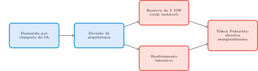
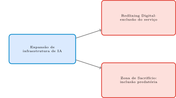
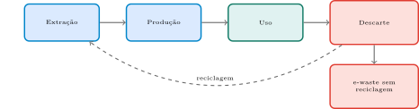

Computação e Sociedade
2026-09-14
Aula 5: decisões de método e métrica mudam o comportamento do usuário, mesmo parecendo “só técnicas”. Ficou em aberto: o que mais uma escolha de engenharia pode custar, sem ninguém “decidir” isso explicitamente?
Hoje: saímos do comportamento do usuário e vamos para a materialidade física da infraestrutura computacional — energia, água, minerais, terra.
Nascimento & Raimundo (2026), p. 1
“A IA é frequentemente vendida como uma tecnologia sem peso… Mas sob essa abstração algorítmica há materialidade: a IA é feita de solo, água e energia.” (tradução livre)
O eixo desta aula: um artigo de pesquisa real, escrito por Beatriz Cardoso Nascimento, aluna de graduação deste Instituto, com o professor desta disciplina — não publicado ainda, mas um caso concreto e atual.
A Nuvem Tem Peso?
Se o custo material da IA (energia, água, minerais) fosse totalmente visível e cobrado diretamente de quem se beneficia do serviço — em vez de ficar invisível, distribuído em algum território distante —, o que provavelmente mudaria primeiro: o comportamento do consumidor, ou onde esses projetos são construídos?
Dica: pense em quem hoje arca com o custo material de um serviço de IA, e em quem hoje se beneficia dele — são, em geral, o mesmo grupo?
Dica
Retomando: hoje vamos rastrear, concretamente, para onde vai essa materialidade — começando pelo vocabulário técnico de TI Verde (Bloco 2) e depois por um caso real (Bloco 3).
TI Verde (Maciel & Viterbo, 2020, Cap. 14): conjunto de práticas para reduzir o impacto ambiental do uso de tecnologia.
Maciel & Viterbo (2020), p. 182
“Exemplos práticos: uso de recursos que consumam menos energia, matéria-prima menos tóxica, descarte responsável por reciclagem e reutilização.” (tradução livre)
Água, p. 193
“Utilizar menos hardware; priorizar fabricantes que usem menos água […] menos necessidade de resfriamento por água.” (tradução livre)
Energia, p. 194
“Utilizar hardware em que o resfriamento dependa minimamente de combustíveis fósseis […].” (tradução livre)
O termo comum às duas: resfriamento. É o segundo eixo de consumo de recurso natural de um data center — independente da fonte de energia usada.
O Preço Escondido do Resfriamento
Um data center anuncia que “roda 100% em energia limpa” (solar/eólica). Isso resolve completamente a tensão de recursos que a Tabela 14.1 aponta?
Dica: pense em quantas dimensões de recurso a tabela lista, além de energia — água, minerais, reciclabilidade.
Dica
Retomando: essa mesma dinâmica de resfriamento intensivo é exatamente o que está no centro do caso real que vamos analisar agora.
Nascimento & Raimundo (2026), p. 4
“Em Eldorado do Sul, a Scala AI City captura uma reserva massiva de 5 GW de energia, apesar da instabilidade elétrica da região e de sua vulnerabilidade a desastres climáticos, incluindo as enchentes de 2024, marginalizando os Mbyá-Guarani da Tekoa Pekuruty e priorizando o resfriamento de servidores sobre direitos territoriais ancestrais.” (tradução livre)
5 GW — ordem de grandeza comparável à demanda de uma região metropolitana inteira, reservada para um único empreendimento.
Instabilidade elétrica regional — a reserva compete por capacidade já escassa, não entra numa rede com folga.
Enchentes de 2024 — o mesmo Rio Grande do Sul, atingido por desastre climático catastrófico recente e documentado.
Tekoa Pekuruty — comunidade Mbyá-Guarani cujos direitos territoriais ancestrais são marginalizados pelo projeto.

Dica
Nenhum documento diz “priorizamos resfriamento sobre direitos” — o resultado emerge de decisões de arquitetura tomadas sem a comunidade “na sala” (mesmo mecanismo de ausência de interessado das Aulas 1 e 4).
O artigo é de Beatriz Cardoso Nascimento, aluna de graduação deste Instituto, com o professor desta disciplina — pesquisa real, em avaliação.
Nascimento & Raimundo (2026), Considerações Éticas, p. 5
As autoras reconhecem sua posicionalidade como pesquisadoras que não pertencem às comunidades indígenas/quilombolas discutidas, comprometendo-se a “analisar os mecanismos estruturais” sem falar por essas comunidades — um modelo de transparência de pesquisa.
Quem Decidiu Isso, Exatamente?
No caso Scala AI City, nenhum documento público diz “vamos priorizar o resfriamento de servidores sobre os direitos da Tekoa Pekuruty” — a decisão nunca aparece formulada dessa forma explícita. Como, então, esse resultado acontece?
Dica: pense na estrutura já vista na Aula 4 (mapa de papéis) — quem decide uma reserva de energia, e quem seria o interessado que normalmente não está na sala.
Dica
Retomando: o próximo bloco nomeia formalmente o mecanismo que esse caso ilustra — soberania digital, policrise e zona de sacrifício digital.
Nascimento & Raimundo (2026), pp. 1–2
“Capacidade de um Estado de exercer autoridade sobre sua arquitetura digital […]. Pelo menos quatro dimensões: infraestrutural, de dados, regulatória e epistêmica.” (tradução livre)
As quatro dimensões podem avançar desigualmente: leis de dados rígidas (regulatória forte) + servidores 100% estrangeiros (infraestrutural fraca) é perfeitamente possível.
O paradoxo — Nascimento & Raimundo (2026), p. 2
“A busca por soberania digital se torna contraditória, já que alcançar autonomia infraestrutural frequentemente exige atrair capital estrangeiro e acomodar interesses de corporações transnacionais.” (tradução livre)
Nascimento & Raimundo (2026), p. 1
“Crises através de múltiplos sistemas globais que se tornam causalmente entrelaçadas de formas que degradam significativamente as perspectivas da humanidade.” (tradução livre)
Clima (enchentes 2024) + energia (rede instável) + social (marginalização da Tekoa Pekuruty) não são três problemas separados no caso Scala AI City — é a mesma policrise em três frentes.
Nascimento & Raimundo (2026), p. 3
“Territórios onde a destruição ambiental […] é tratada como o preço necessário para a integração tecnológica […]. Diferente do redlining digital — que foca em segregação e negação de serviços —, zonas de sacrifício digital são caracterizadas por inclusão predatória.” (tradução livre)
A distinção em uma frase: redlining exclui; zona de sacrifício inclui predatoriamente — o território “entra no mapa” como sítio de extração, não como beneficiário.

Dica
A Tekoa Pekuruty não foi excluída da Scala AI City — o projeto está ao redor dela, consumindo os recursos da região, sem benefício proporcional. Isso é inclusão predatória, não redlining.
A IA como “acelerador metabólico”: otimiza processos extrativos e demanda, para existir fisicamente, escala sem precedentes de energia e água.
Inclusão Predatória: Inclusão de Verdade?
Se um território é oficialmente “incluído” no mapa global de infraestrutura de IA — recebe investimento, é mencionado em relatórios de expansão tecnológica — isso já garante que ele se beneficia dessa inclusão?
Dica: volte à distinção entre redlining digital (exclusão) e zona de sacrifício digital (inclusão predatória).
Dica
Retomando: o próximo bloco amplia o olhar para outros países da América Latina, mostrando que o padrão de Eldorado do Sul não é isolado.
Nascimento & Raimundo (2026), p. 4
“Querétaro, México: centros de dados prosperam em meio a fragilidade hídrica/elétrica; aumento de 151% nos apagões (2014–2023). ‘Módulo Penco’, Chile: terras raras em sítio de resistência Mapuche, rejeitado por 99% em consulta pública.” (tradução livre)
Recurso diferente em cada caso (água/eletricidade vs. terras raras), mesmo mecanismo estrutural: recurso crítico para IA extraído de território com resistência local documentada.
Nascimento & Raimundo (2026), p. 3
“Em 2024, o governo do Pará assinou um acordo de R$ 1 bilhão para vender créditos de carbono […] sem consulta às comunidades indígenas e quilombolas […] — contrariando o CLPI da Convenção 169 da OIT.” (tradução livre)
Nascimento & Raimundo (2026), p. 3
“Colonialismo verde: a Amazônia reposicionada como ativo financeiro […]. Corporações optam por comprar créditos de carbono em vez de reduzir seu impacto material na fonte.” (tradução livre)
O mecanismo: em vez de reduzir emissão na origem, comprar o direito de compensá-la — financiando proteção florestal sem consultar quem vive nela. A narrativa “verde” encobre, não resolve, a externalização de custo.
Um Acordo “Verde” Sem Quem Vive na Terra
A Coalizão LEAF apresenta o acordo do Pará como vitória de conservação. O que, no próprio texto do artigo, mostra que essa narrativa e a política real divergem?
Dica: pense em quem foi consultado, e quem não foi, no acordo de R$ 1 bilhão.
Dica
Retomando: três casos, três recursos diferentes (energia/água, terras raras, floresta/carbono), um mesmo padrão estrutural. O próximo bloco volta ao vocabulário técnico de projeto que poderia responder a esse padrão.
Voltamos às duas leituras-base da ementa: Van de Poel & Royakkers (2011) e Maciel & Viterbo (2020) — vocabulário técnico de projeto, para responder ao padrão dos Blocos 3–5.
Van de Poel & Royakkers (2011), p. 283
“Desenvolvimento que atende às necessidades do presente sem comprometer a capacidade das gerações futuras de atender às próprias necessidades.” (tradução livre)
Duas ideias-chave na própria definição: as necessidades essenciais dos mais pobres do mundo (prioridade absoluta) e os limites que a tecnologia e a organização social impõem à capacidade do ambiente.
p. 284
Intergeracional: divisão de recursos entre gerações. Intrageracional: divisão de recursos dentro da mesma geração (ex.: Primeiro vs. Terceiro Mundo).
Dica
Scala AI City é, ao mesmo tempo, um problema de justiça intrageracional (custo recai sobre a Tekoa Pekuruty, não sobre quem usa o serviço) e do princípio do poluidor-pagador.
Van de Poel & Royakkers (2011), p. 293
“Uma análise que mapeia o impacto ambiental de um produto ao longo de todo o ciclo de produção, uso e descarte.” (tradução livre)
Medir só a fase de uso esconde o impacto de produção (extração/manufatura) e descarte (e-waste).

Dica
Cada seta é uma fase que a Tabela 14.1 (Bloco 2) já cobre com diretivas próprias — a seta tracejada de volta (reciclagem) é precisamente o que falta quando um sistema termina em e-waste, em vez de matéria-prima reaproveitada.
Maciel & Viterbo (2020), p. 187
Verde Por Software: sistemas que promovem sustentabilidade. Verde No Software: tornar o próprio software mais sustentável.
Aviso
Nenhuma das duas, sozinha, teria evitado o caso Scala AI City — o problema não é falha de eficiência técnica, é quem decide e quem é consultado.
O Ciclo Que Ninguém Vê Até o Fim
Se uma empresa mede sua “pegada de carbono” apenas pela fase de uso de seus servidores (a energia elétrica que eles consomem enquanto rodam), o que a análise de ciclo de vida diria que está faltando nessa contabilidade?
Dica: pensar nas fases que vêm antes e depois do “uso”: extração/ produção, e descarte.
Dica
Retomando: o próximo bloco sintetiza tudo isso numa ética territorial — o que significa levar o território a sério, não só como jurisdição legal.
Vocabulário técnico de sustentabilidade (TI Verde, ciclo de vida) é útil, mas sozinho não resolve o problema dos Blocos 3–5: não é eficiência técnica, é quem decide e quem é consultado.
Nascimento & Raimundo (2026), p. 4
“Ética territorial: […] o território tratado não como jurisdição legal passiva, mas como entidade multidimensional que une ecossistema físico a espaços culturalmente apropriados.” (tradução livre)
Tratar território só como jurisdição legal (área disponível para reservar energia, extrair mineral) é o que permite tratar sua degradação como “preço aceitável” — mecânica central de toda zona de sacrifício digital.
1. Quem paga o custo material? Energia, água, minerais, terra — quem arca, e quem se beneficia do serviço final?
2. Quem foi consultado, e como? “Incluído no mapa” não é o mesmo que “consultado sobre os termos da inclusão”.
3. Que narrativa de sustentabilidade está em jogo, e para proteger o quê? O caso LEAF/Pará mostra que “verde” pode encobrir, não resolver.
4. O vocabulário técnico de projeto foi usado, e em que estágio da decisão? Ferramentas ajudam, mas não substituem a pergunta de quem decide.
Um Checklist Territorial
Escolha um projeto de infraestrutura digital que você conhece (real ou hipotético — pode ser um data center, um cabo submarino, uma mina de minerais para hardware). Aplicando o checklist desta síntese, você consegue dizer, com alguma confiança, quem paga o custo material desse projeto e quem foi consultado sobre ele?
Dica: pense especificamente na diferença entre “quem se beneficia do serviço final” e “quem arca com o custo físico de produzi-lo”.
Dica
Retomando: o próximo bloco fecha a aula retomando as cinco perguntas do roteiro inicial.
1. De onde vem a energia e a água? Da construção e operação de hardware físico — nunca de um espaço “sem peso”.
2. Eldorado do Sul? Scala AI City: 5 GW numa rede instável, com histórico de enchentes, marginalizando a Tekoa Pekuruty.
3. Soberania digital? Quatro dimensões — contraditória porque autonomia infraestrutural exige, com frequência, capital estrangeiro.
4. Sacrifício vs. redlining? Redlining exclui; sacrifício inclui predatoriamente — território como sítio de extração, não beneficiário.
5. O que um projeto pode fazer? Ferramentas técnicas ajudam, mas não substituem ética territorial e consulta genuína.
Dica
Custo material da IA é distribuído desigualmente e invisibilizado por narrativas de progresso — hoje vimos como e por quê.
O Que Mais Está Escondido Atrás da Tela?
Assim como o custo material de um data center fica invisível até alguém escrutinar, o que você imagina que também pode estar “escondido” dentro dos próprios dados que treinam um sistema de IA, mesmo sem ninguém ter decidido explicitamente colocar isso ali?
Dica: pensar em como os dados históricos carregam decisões e desigualdades passadas, sem que ninguém precise “programá-las” de propósito.
Dica
Ponte para a Aula 7: se o custo material da infraestrutura já fica invisível até ser escrutinado, os próprios dados que alimentam um sistema de IA também carregam uma história de viés que produz discriminação automatizada sem que ninguém precise “programá-la” de propósito. É por aí que a Aula 7 continua a Parte 2 do curso.
UNICAMP — Instituto de Computação